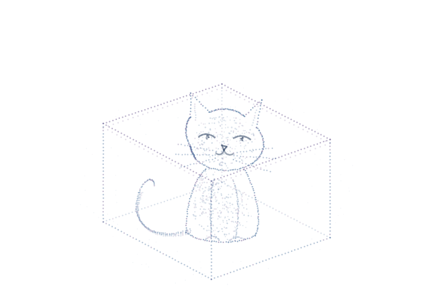

Quantum circuits. Visible dynamics.
Explore coherent operations gate by gate, then inspect the complex amplitudes and measurement statistics. A separate point-cloud study illustrates the cat thought experiment.

A cat and its enclosure formed from blue and violet particles. Open the box to sample an alive or dead outcome from the selected probability.Before you look.
The box is a familiar thought experiment. Here it represents a deliberately simplified two-outcome measurement.
No measurements yet.
An illustrative two-state model sampled with a classical random number. It does not simulate macroscopic coherence, decoherence or a real cat.
Follow the circuit.
Watch the amplitudes.
Explore entanglement, a Fourier transform and phase estimation. Select a gate to inspect the state after that operation, or replay the complete circuit.
Swipe through the circuit
Ideal noiseless simulation in your browser, using 16 complex amplitudes. Bit order: |q₀q₁q₂q₃⟩; q₀ is the most significant bit. Entropy is the von Neumann entropy of the reduced q₀ state, in bits. Illustrates algorithms, not experimental hardware performance. Theory: IBM Quantum ↗